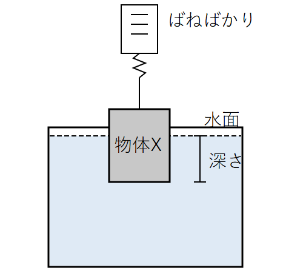
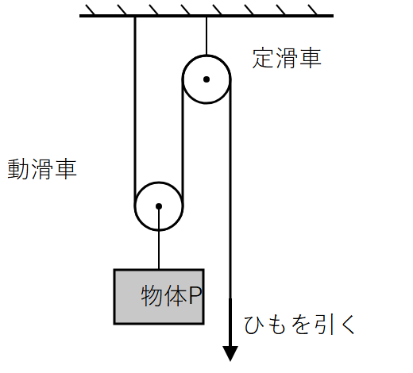
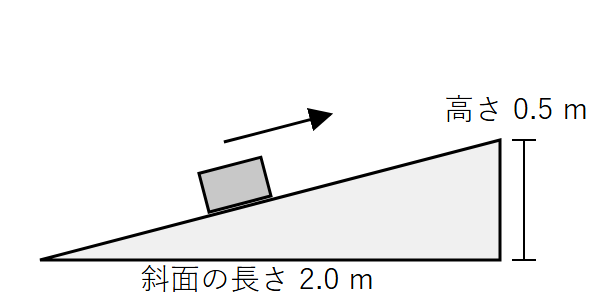
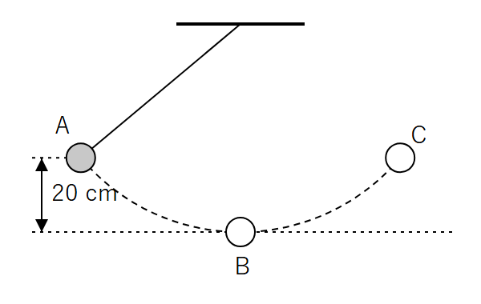
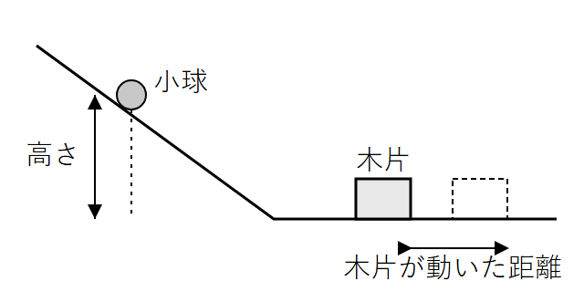
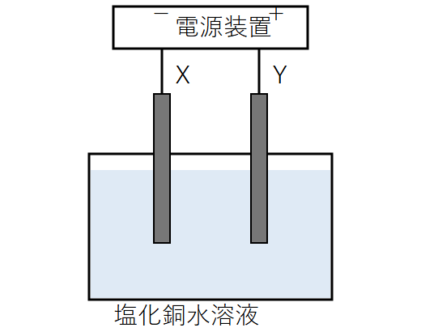
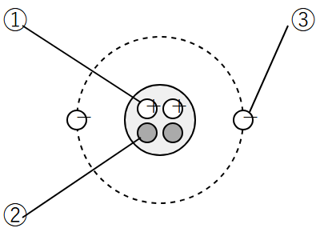

時間 50分 ／ 100点満点
【注意】
①答えはすべて紙（またはノート）に書くこと。
②「式」の欄がある問題は、答えだけでなく途中の式も書くこと。
③100 g の物体にはたらく重力の大きさを1 Nとする。
④水1 cm³ の質量は1 gである。水中で、物体が押しのけた水1 cm³ あたりにはたらく浮力は0.01 Nとする。
⑤特にことわりがない場合、ばねばかり・滑車・ひもの質量、および摩擦や空気の抵抗は考えないものとする。
底面積 20 cm²、高さ 6.0 cm の直方体の物体Xがある。物体Xを空気中でばねばかりにつるすと、目盛りは 1.8 N を示した。図1のように、物体Xの底面を水面と平行にしたまま、水面から底面までの深さを変えながら、ばねばかりの示す値を調べた。表はその結果である。

| 物体の底面の深さ〔cm〕 | 0 | 2.0 | 4.0 | 6.0 | 8.0 |
|---|---|---|---|---|---|
| ばねばかりの示す値〔N〕 | 1.8 | 1.4 | 1.0 | 0.6 | 0.6 |
(1) 水圧について述べた文として正しいものを、次のア〜エから1つ選び、記号で答えなさい。（2点）
答（）
(2) ダムの壁は、下の部分ほど厚くつくられている。その理由を、水圧の性質にふれて簡単に書きなさい。（3点）
(3) 物体Xの底面の深さが 4.0 cm のとき、物体Xにはたらく浮力の大きさは何Nですか。（2点）
答（）N
(4) 物体Xの底面の深さが 6.0 cm 以上になると、ばねばかりの示す値が変化しなくなった。その理由を「体積」という語を使って書きなさい。（3点）
(5) 水中に完全に沈んだ物体には、上向きの力である浮力がはたらく。浮力が生じる理由を、物体の上面と下面にはたらく水圧のちがいにふれて書きなさい。（3点）
(6) 物体Xを完全に水中に沈めて、ばねばかりからはずし静かに手をはなすと、物体Xは浮きますか、沈みますか。「浮く」「沈む」のどちらかで答え、その理由を、浮力と重力の大きさを用いて説明しなさい。（3点）
答（）
質量 2.0 kg の物体Pがある。
(1) 次の文の（ ① ）、（ ② ）にあてはまる語を書きなさい。（各1点）
仕事の大きさ〔J〕＝物体に加えた（ ① ）の大きさ〔N〕×（ ① ）の向きに動いた（ ② ）〔m〕
①（） ②（）
(2) 物体Pを床から真上に 1.5 m の高さまで、一定の速さで持ち上げた。手が物体Pにした仕事は何Jですか。（2点）
答（）J
(3) 次のア〜エのうち、力を加えているが、その力が物体に対して仕事をしていないものを1つ選び、記号で答えなさい。ただし、イでは体の上下の動きは考えないものとする。（2点）
答（）
図2のように、動滑車と定滑車を使い、物体Pを 1.0 m 引き上げた。

(4) ひもを引く力の大きさは何Nですか。また、ひもを引いた距離は何mですか。（各2点）
力の大きさ（）N 距離（）m
(5) (4)の力で、物体Pを 1.0 m 引き上げるのに 5.0 秒かかった。ひもを引いた人の仕事率は何Wですか。（2点）
答（）W
(6) (4)で、滑車を使っても使わなくても、仕事の大きさは同じになる。「仕事の原理」が成り立つことを、物体Pを滑車を使わずに 1.0 m 持ち上げた場合の仕事と、滑車を使ったときにひもを引いた力がした仕事の大きさを比べて、説明しなさい。（3点）
図3のように、摩擦のない斜面にそって、物体Pを一定の速さで斜面の下から上まで引き上げた。

(7) 物体Pを引く力の大きさは何Nですか。仕事の原理を用いて求めなさい。（3点）
式
答（）N
図4のように、糸におもりをつけて振り子をつくった。おもりを点Aで静かにはなすと、おもりは最下点Bを通り、反対側の点Cまで達した。ただし、(1)〜(3)では、空気の抵抗や糸・支点での摩擦は考えないものとする。

(1) 高い位置にある物体がもつエネルギーを（ ① ）エネルギー、運動している物体がもつエネルギーを（ ② ）エネルギーという。（ ）にあてはまる語を書きなさい。（各1点）
①（） ②（）
(2) おもりが点Aから点Bへ動く間に、おもりの位置エネルギーと運動エネルギーは、それぞれどうなりますか。「増える」「減る」「変わらない」から選んで書きなさい。（各1点）
位置エネルギー（） 運動エネルギー（）
(3) 点Cの高さは、点Aの高さと比べてどうなりますか。「高い」「同じ」「低い」から選び、そうなる理由を「力学的エネルギー」という語を使って書きなさい。（3点）
答（）
(4) 実際の振り子は、しだいに振れ幅が小さくなり、やがて止まる。このとき、おもりがもっていた力学的エネルギーは、どのようになったと考えられますか。その原因にもふれて書きなさい。（3点）
次に、図5のような装置で、小球を斜面上のいろいろな高さからはなし、水平面上の木片に当てて、木片が動いた距離を調べた。表は、質量 50 g の小球と質量 100 g の小球を用いたときの結果をまとめたものである。ただし、小球は斜面から水平面へなめらかに進み、斜面と水平面の摩擦は考えないものとし、木片と水平面の間の摩擦の大きさは、どの実験でも同じとする。

| 小球の質量〔g〕 | 50 | 50 | 50 | 50 | 100 |
|---|---|---|---|---|---|
| 小球をはなす高さ〔cm〕 | 5.0 | 10.0 | 15.0 | 20.0 | 10.0 |
| 木片が動いた距離〔cm〕 | 2.0 | 4.0 | 6.0 | 8.0 | 8.0 |
(5) 質量 50 g の小球について、小球をはなす高さと木片が動いた距離には、どのような関係がありますか。（2点）
（）
(6) 質量 100 g の小球を、高さ 15.0 cm からはなしたとき、木片が動く距離は何cmになると考えられますか。表をもとに、考え方も書いて答えなさい。（3点）
考え方
答（）cm
(7) 斜面の傾きだけを大きくして、質量 50 g の小球を高さ 10.0 cm からはなしたとき、木片が動く距離は、傾きを変える前（4.0 cm）と比べてどうなりますか。「大きくなる」「小さくなる」「変わらない」から選び、そうなる理由を書きなさい。（3点）
答（）
次のA〜Eの水溶液を用意し、電極、電源装置、電流計をつないだ装置を使って、それぞれの水溶液に電流が流れるかどうかを調べた。1つの水溶液を調べ終わるごとに、電極を蒸留水で洗ってから次の水溶液を調べた。
A：砂糖水 B：食塩水 C：塩酸 D：エタノール水溶液 E：水酸化ナトリウム水溶液
(1) 水にとかしたとき、電流が流れる物質を①（ ）、電流が流れない物質を②（ ）という。①、②にあてはまる語を書きなさい。（各1点）
①（） ②（）
(2) 電流が流れなかった水溶液を、A〜Eからすべて選び、記号で答えなさい。（2点）
答（）
(3) 水溶液を調べ終わるごとに、電極を蒸留水で洗うのはなぜですか。（2点）
(4) 純粋な水（蒸留水）には電流がほとんど流れないが、食塩をとかすと電流が流れるようになる。その理由を、「イオン」という語を使って書きなさい。（3点）
(5) 塩化ナトリウムが水にとけて、陽イオンと陰イオンに分かれるようすを、化学式を用いた式で表しなさい。（2点）
（）
(6) Bの食塩水の濃度を大きくして、同じ電圧を加えたとき、流れる電流の大きさは、濃度を大きくする前と比べてどうなりますか。「大きくなる」「小さくなる」「変わらない」から選び、その理由を「イオン」という語を使って書きなさい。（3点）
答（）
図6のように、炭素棒を電極としてうすい塩化銅水溶液に入れ、電流を流した。電極Xは電源装置の－極に、電極Yは＋極につないである。しばらくすると、一方の電極の表面に赤褐色の物質が付着し、もう一方の電極からは気体が発生した。

(1) 陰極は、電極X、Yのどちらですか。（2点）
答（）
(2) 赤褐色の物質を薬さじの裏でこすると、光沢が出た。この物質の名称を書きなさい。また、金属に共通するこの光沢の性質を何といいますか。（各2点）
名称（） 性質（）
(3) 気体が発生した電極付近では、プールの消毒のようなにおいがした。発生した気体の名称を書きなさい。また、この気体を確かめる方法を、その気体の性質にふれて簡単に書きなさい。（3点）
気体の名称（）
(4) この実験で塩化銅が分解されるようすを、化学式を用いた式で表しなさい。（3点）
（）
(5) 電流を流し続けると、水溶液の青色がうすくなった。その理由を、イオンにふれて書きなさい。（3点）
(6) 次に、塩酸を電気分解した。陰極側と陽極側で集まった気体の体積を比べると、陰極側では 8 mL、陽極側では約 5 mL であった。塩酸の電気分解では、陰極と陽極から同じ体積の気体が発生するにもかかわらず、陽極側で集まった気体の体積が少なかった理由を、気体の名称を用いて書きなさい。（3点）

(1) 図7の原子のモデルについて、①の粒子は＋の電気をもち、②の粒子は電気をもたない。①、②の粒子の名称を書きなさい。また、③の粒子がもつ電気は＋、－のどちらですか。（各1点）
①（） ②（） ③（）
(2) 原子全体は、ふつう電気を帯びていない。その理由を、陽子と電子の数と電気の量にふれて書きなさい。（2点）
次の表は、粒子A〜Dがもつ陽子・中性子・電子の数を表したものである。A〜Dは、原子またはイオンのいずれかである。
| A | B | C | D | |
|---|---|---|---|---|
| 陽子の数 | 9 | 11 | 12 | 12 |
| 中性子の数 | 10 | 12 | 12 | 13 |
| 電子の数 | 10 | 10 | 12 | 12 |
(3) A〜Dのうち、陽イオンであるものと、陰イオンであるものを、それぞれ1つずつ記号で答えなさい。（各1点）
陽イオン（） 陰イオン（）
(4) 次のイオンを、イオンの化学式で表しなさい。（各1点）
ナトリウムイオン（） 塩化物イオン（） 銅イオン（）
(5) CとDは、同じ元素の原子である。その理由を、表からわかることを使って書きなさい。また、CとDのような関係にある原子を、たがいに何といいますか。（各1点）
理由
用語（）
(6) ある原子Xが電子を3個失って、陽イオンになった。このイオンがもつ電子の数は 10 個であった。次の問いに答えなさい。ただし、元素の陽子の数と元素記号は、次の表のとおりとする。
| 陽子の数 | 11 | 12 | 13 | 14 |
|---|---|---|---|---|
| 元素記号 | Na | Mg | Al | Si |
(a) 原子Xがもつ陽子の数は何個ですか。考え方も書いて答えなさい。（2点）
考え方
答（）個
(b) この陽イオンを、イオンの化学式で表しなさい。（2点）
答（）
― 終 ―